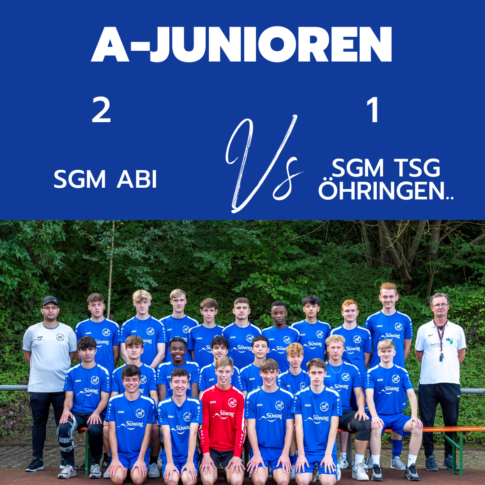

SGM ABI A vs. SGM TSG Öhringen
 Am 28.10. war die SGM TSG Öhringen/Juniorteam TSG/SCM zu Gast bei uns in Abstatt. Vor dem Spiel war es schwer einzuschätzen, was uns heute erwarten würde, da unsere Gäste doch eine Wundertüte waren und es schafften den FC Union zu bezwingen, aber im Umkehrschluss gegen Teams aus der unteren Tabellenregion Punkte liegen ließen. Dennoch waren wir bei leichtem Regen für das Spiel Platz 3 gegen 4 bereit. Wir versuchten beim anfänglichen Abtasten unserem Gegner den Ball zu überlassen und starteten zu passiv ins Spiel, so hatten unsere Gäste eine gewisse Überlegenheit mit mehreren Abschlüssen aus der zweiten Reihe, die Alpay an diesem Tag aber alle parieren konnte. Wir starteten zwar nicht gut in das Spiel, schafften es aber immer wieder die Gäste in die Rückwärtsbewegung zu zwingen, ohne aber den nötigen Biss im letzten Drittel. So dauerte es bis zur 24 Minute, nach einem hohen Pressing eroberten wir den Ball im Aufbauspiel unserer Gegner und Fabi steckte den Ball auf Enis, der Eiskalt vor dem Torspieler einschob.
Mit der Führung bekamen wir ein generelles Übergewicht in die Partie, unsere Gäste hatten zwar immer mal wieder Abschlüsse aus der zweiten Reihe, aber gegen Ende hatten wir die deutlicheren Chancen, so war es Enis der nach einem schnell ausgeführten Freistoß von Finn vor dem Torspieler stand und verpasste. Als Enis kurz vor der Halbzeit wieder frei vor dem Torspieler stand, nach tollem Solo von Philipp, pfiff der Schiedsrichter Freistoß für uns, Philipp wurde zuvor gefoult und der Schiedsrichter pfiff schneller als Enis an den Ball kam. Den fälligen Freistoß konnten wir, anders als in der Woche vorher, leider nicht nutzen, also ging es mit einer 1:0 Führung in die Halbzeit.
Nach der Pause ging es ähnlich weiter wie zuvor. Wir hatten ein wenig mehr den Ball, unsere Gegner versuchten auszugleichen, Alpay parierte und wir nutzen unsere Chancen auch nicht, bis Philipp sich ein Herz fasste und seine Geschwindigkeit auf den Platz brachte... 5 Gegenspieler sahen am Ende nur seine Hacken und Philipp erhöhte auf 2:0. Aber kurz darauf schafften es unsere Gäste nach einer Ecke auf 2:1 zu verkürzen. Wir Köpfen die Ecke raus, unser Gegner kommt an den zweiten Ball und schiebt ein, Abseitsverdächtig ja, bitter ja, aber auch Verdient für unsere Gäste, die kein schlechtes Spiel machten. In der letzten halben Stunde sollte es jetzt noch hin und her gehen, beide Torspieler parierten gut, wir hatten einen Lattentreffer und eine weitere Eins GG Eins Situation, die wir nicht nutzen konnten und waren am Ende froh, die 3 Punkte bei uns behalten zu dürfen, denn am Ende hatten nach einem Standard auch unsere Gäste nochmals eine Große Torchance, die knapp an unserem Tor vorbei ging.
Ein Unentschieden wäre dem Spiel auch gerecht geworden, aber wir nehmen auch gerne die 3 Punkte.
Eventuell noch ein Wort zur Schiedsrichter Leistung, jeder der mal selbst ein Spiel pfeifen musste zudem noch bei zwei schnell und gut spielenden Mannschaften, weiß wie schwer die Aufgabe sein kann, zumal die Schiedsrichter in unseren spielen auf sich alleine gestellt sind, potentielle Situationen über die man sich ärgern kann, wird es immer geben, hier braucht es aber auch ein wenig mehr Empathie, denn der Schiedsrichter an diesem Tag war stets auf Höhe, hatte Kontrolle über die Spielleitung und leitete das Spiel gut. Ihr seid gerne eingeladen einen Neulingskurs zu besuchen und selbst Verantwortung auf dem Platz zu übernehmen.
Für unsere SGM ABI spielten: Alpay, Romeo, Lukas, Ryan, Andrew, Fabi, Finn, Enis, Philipp, Eyüp, Flori, Eric, Jahir, Benni und Julius.
Am 08.11. begrüßen wir die SGM Neuenstadt Kochertal bei uns in Heinriet zum Pokalviertelfinale.
Am 11.11. sind wir zu Gast bei der SGM FSV Schwaigern/ Oberes Leintal I. #2023/ajunioren